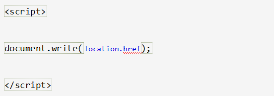
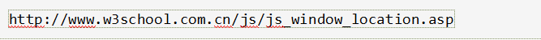
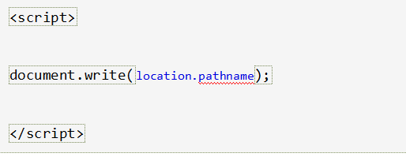
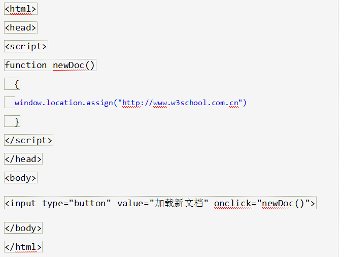
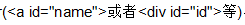
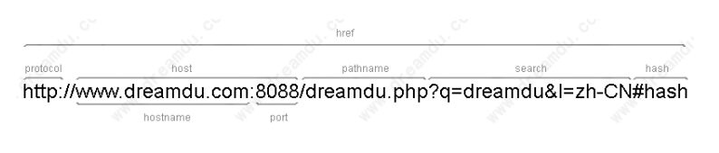

window.location 对象用于获得当前页面的地址 (URL)，并把浏览器重定向到新的页面。
Window Location
window.location 对象在编写时可不使用 window 这个前缀。
一些例子：
location.hostname 返回 web 主机的域名
location.pathname 返回当前页面的路径和文件名
location.port 返回 web 主机的端口 （80 或 443）
location.protocol 返回所使用的 web 协议（http:// 或 https://）
Window Location Href
location.href 属性返回当前页面的 URL。
IE浏览器执行 window.location.href 跳转失败的解决方法
在window.location.href = url;后面加一句window.event.returnValue = false;
实例
返回（当前页面的）整个 URL：

以上代码输出为：

Window Location Pathname
location.pathname 属性返回 URL 的路径名。
实例
返回当前 URL 的路径名：

以上代码输出为：
/js/js_window_location.asp
Window Location Assign
location.assign() 方法加载新的文档。
实例
加载一个新的文档：

location既是window对象的属性又是document对象的属性
location包含8个属性，其中7个都是当前窗体的URL的一部分，剩下的也是最重要的一个是href属性，代表当前窗体的URL
location的8个属性都是可读写的，但是只有href与hash的写才有意义。例如改变location.href会重新定位到一个URL，而修改location.hash会跳到当前页面中的anchor 名字的标记(如果有)，而且页面不会被重新加载
示例
document.write(window.location==document.location);
location对象属性图示

location属性
JavaScript hash 属性 -- 返回URL中#符号后面的内容
JavaScript host 属性 -- 返回域名
JavaScript hostname 属性 -- 返回主域名
JavaScript href 属性 -- 返回当前文档的完整URL或设置当前文档的URL
JavaScript pathname 属性 -- 返回URL中域名后的部分
JavaScript port 属性 -- 返回URL中的端口
JavaScript protocol 属性 -- 返回URL中的协议
JavaScript search 属性 -- 返回URL中的查询字符串
JavaScript assign() 函数 -- 设置当前文档的URL
JavaScript replace() 函数 -- 设置当前文档的URL，并在history对象的地址列表中删除这个URL
JavaScript reload() 函数 -- 重新载入当前文档(从server服务器端)
JavaScript toString() 函数 -- 返回location对象href属性当前的值
猴子提示: 主域名是不带www的域名，例如dreamdu.com，主域名前面带前缀的通常都为二级域名或多级域名，例如www.dreamdu.com其实是二级域名。